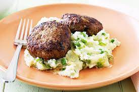
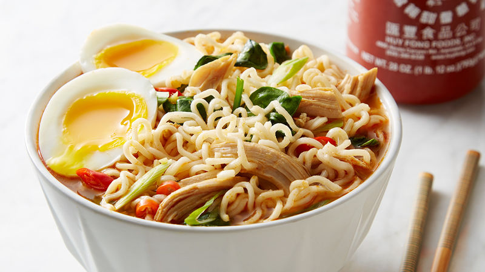

Food Aventures
After getting braces on I realised that I can no longer eat anything sold. So I've selected 5 foods that I can eat and satirized their recipes rather than create actual ones. If you just want to see food, check out this blog!
Chicken Soup
Filled with a variety of garden veg and chicken for protein there is nothing more you could want this winter.
 Real recipe
Real recipe
Ingredients
- 125g of chicken
- 2 whole carrots
- soft bread
- water
- grandma's love
Instructions
- Start by putting the water into a bowl.
- Add the chicken and cartons while stiring the water vigouriously
- Turn the stove on to roughly 250 celcius and watch what happens while enjoying eating some soft bread. If you have yet to put the pot onto the stove I suggest you do so otherwise it won't boil.
- Make sure that grandma has given the bowl of soup here love otherwise it won't taste good
- Remove from the stove and let the soup rest for 10-15 minutes.
- Enjoy!
Risoles & Mash
The soft texture of the mash potato really complements the meat. When you get braces you will find that chewing is difficult and so when the meat structure is set out like the beef risoles it will melt in the mouth with little to no chewing required. Avoid steam vegetables, for some reason restuarants think it is ok to undercook them and leave them hard.

Real recipe
Ingredients
- 2 Risoles (preferably beef)
- 4 potatos
- random green things
- 3 tablespoons of milk
Instructions
- Cook the Risoles on a stovetop, turning the meat when you want to. Avoid the awkward looks from your housemate to avoid any meat jokes.
- Boil potatos
- Mash the potato.
- Add random green things and the milk to the mash potato and keep mashing
- Remember that you left the stove on after you finished cooking the risoles and you need shut it off.
- Throw your risoles ontop of the mash and enjoy!
Ramen
Can't go without the ramen noodles. They're are both affordable and easy to make. Sometimes you can add a few extras if you want to spice it up.

Real recipe
Ingredients
- 1 packet of instant ramen noodles
- 1 egg
- water
- other soft things depending on your mood
Instructions
- Put the noodles into a pot.
- Add water until the noodles look they are happy
- Turn the stove onto the hot setting this time and boil those noodles until they're soft like a parent when a child does something cute.
- boil and cut an egg too, maybe. just make sure that you don't under cook it.
- Add all the other things that you wanted to the pot to make it look nice. Instagram needs a good picture for all your friends to see what you are up too!
- Put it into 2 different bowls and serve it to a friend.
- Don't eat it while your housemate is watching. they will make weird remarks about your slirping noises.
Recipe for Chicken Soup
Filled with a variety of garden veg and chicken for protein there is nothing more you could want this winter.
for the real recipe
Ingredients
- 125g of chicken
- 2 whole carrots
- fish sticks
- water
- grandma's love
Instructions
- Start by putting the water into a bowl.
- Add the chicken and cartons while stiring the water vigouriously
- Turn the stove on to roughly 250 celcius and watch what happens while enjoying your fish sticks. If you have yet to put the pot onto the stove I suggest you do so otherwise it won't boil.
- Make sure that grandma has given the bowl of soup here love otherwise it won't taste good
- Remove from the stove and let the soup rest for 10-15 minutes.
- Enjoy!
Recipe for Chicken Soup
Filled with a variety of garden veg and chicken for protein there is nothing more you could want this winter.
for the real recipe
Ingredients
- 125g of chicken
- 2 whole carrots
- fish sticks
- water
- grandma's love
Instructions
- Start by putting the water into a bowl.
- Add the chicken and cartons while stiring the water vigouriously
- Turn the stove on to roughly 250 celcius and watch what happens while enjoying your fish sticks. If you have yet to put the pot onto the stove I suggest you do so otherwise it won't boil.
- Make sure that grandma has given the bowl of soup here love otherwise it won't taste good
- Remove from the stove and let the soup rest for 10-15 minutes.
- Enjoy!